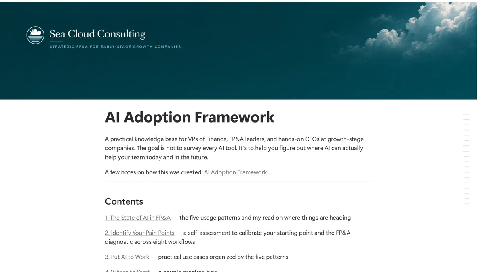
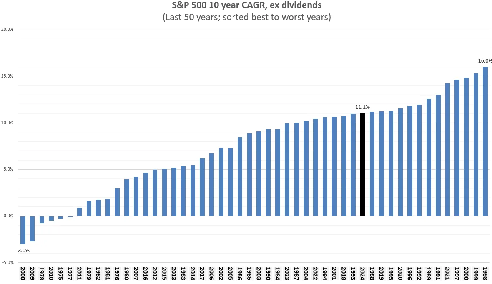

Practical FP&A thinking for growth companies
I write about FP&A. There is a series on strategic planning and another on cost savings initiatives, plus financial modeling, Excel, hiring, and how I actually use AI in the work.
Grouped by topic below. For everything in date order, see the blog.
Strategic planning
A six-part series on running strategic planning inside FP&A.
As strategic planning starts to pick up for most companies, finance teams should start to zero in on the most important strategic…
You’re in FP&A and the CFO suddenly asks you to lead strategic planning out of the blue. You just joined a few weeks ago.⚡Do you…
Stop being just the FP&A reporting team—lean into strategy. This post shares a practical framework any FP&A leader can apply to…
Strategic planning isn’t easy. When multiple teams and diverse skills come together, the process can go off the rails. 🛤️ Based…
Q2 is when many companies kick off strategic planning, and this process is one of the best opportunities for FP&A to help drive…
Cost savings
What actually works when the mandate is to spend less.
During an interview for an FP&A role at a biotech company several years ago, the head of R&D asked how I would evaluate their…
When the pressure is on to reduce costs, G&A often finds itself on the chopping block. It’s seen as an easy target (“just…
Controlling costs is a critical part of FP&A, both during budgeting and as actuals are reviewed each month. However, catalysts…
Financial modeling
Building models people trust, and validating the ones you inherit.
AI facilitates System 1 thinking and may suppress System 2 thinking. This is a hypothesis that I have been reflecting on lately.…
“What’s the ROI?” 🤔 This is a fair question that I have often asked during my FP&A career, but it’s not always the right one. To…
In past FP&A roles, I often used the slower days around the holidays to refine and improve my models. It’s a great time to step…
I have seen a lot of posts on how to create a financial model. But how do you check a model done by somebody else? This is how I…
Building an FP&A team
Hiring, structuring, and scaling a finance team.
At a dinner event recently, someone floated the idea that every SaaS company that forecasted customer lifetime value (LTV) before…
Current and future headcount data is critical for a financial forecast but can become a massive time suck 🌀 for FP&A teams if a…
Last week, I wrote about growing an FP&A team from 0 to 5, based on my experience. This week, I hand-picked sources, added them…
Last week, somebody asked me about how I would build an FP&A team from 0 to 5. Here is how I would approach it. 𝗛𝗶𝗿𝗲 𝘁𝗵𝗲 𝗥𝗶𝗴𝗵𝘁…
AI and finance
Where AI genuinely helps, and where it quietly costs you.

A reference guide on where AI works in FP&A today, how adoption usually progresses, and the use cases I have actually…
AI makes building tools cheap but coordination expensive. Lessons on ownership, integration, and avoiding burnout.
More
Everything else.
Testing Claude for Excel using real sample files. Lessons on checking AI output, cleaning data, and using AI to improve Excel…

I received my first stock investment in the 6th grade when my mom gifted me a single share of Disney. At the time, this included…
I’m excited to announce the launch of my FP&A consulting business, Sea Cloud Consulting. When I was working full time, I always…